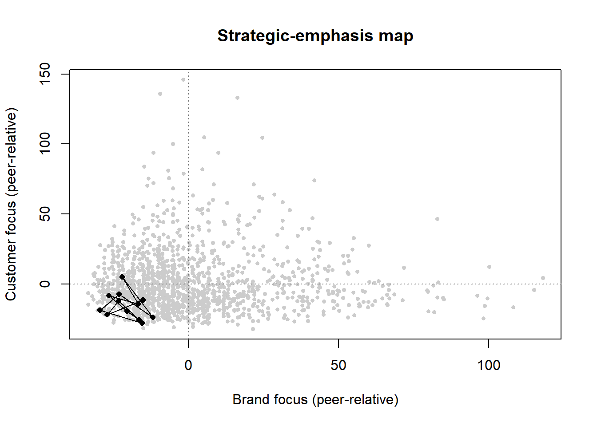
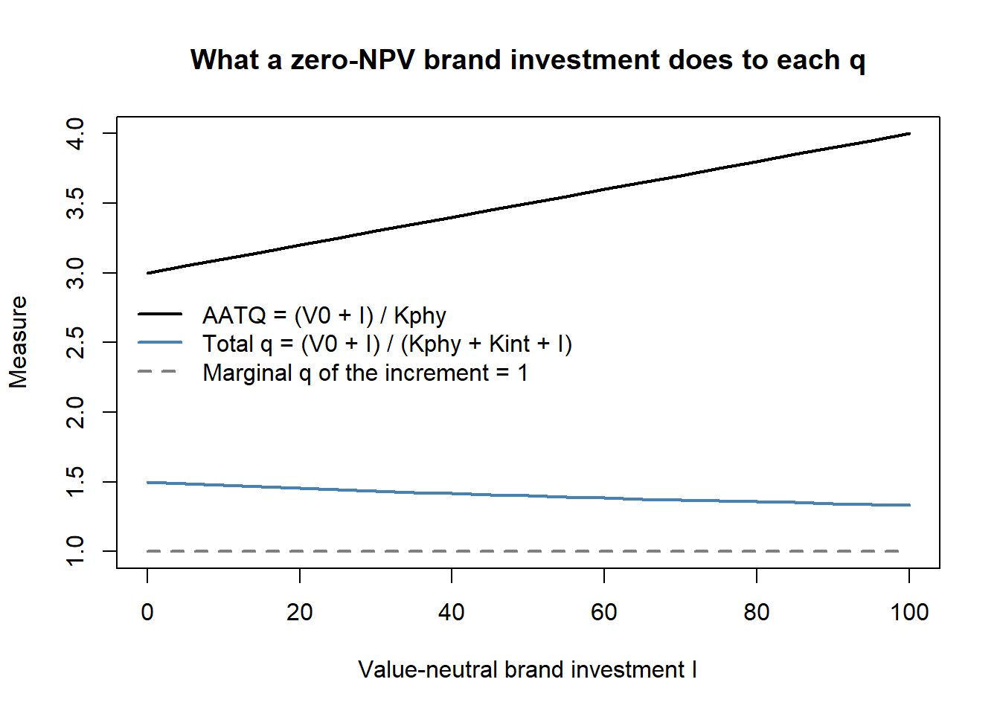

flowchart LR
A["Marketing actions<br/>(advertising, innovation,<br/>relationship investment)"]
--> B["Market-based assets<br/>Relational: brands, customers,<br/>channels, partners<br/>Intellectual: market knowledge"]
B --> C["Product-market outcomes<br/>faster penetration · price premium<br/>share premium · extensions<br/>lower selling/service cost<br/>loyalty / retention"]
C --> D1["Accelerate cash flows"]
C --> D2["Augment level of cash flows"]
C --> D3["Reduce volatility &<br/>vulnerability of cash flows"]
C --> D4["Enhance residual value"]
D1 --> E["Shareholder value"]
D2 --> E
D3 --> E
D4 --> E
24 Marketing–Finance Interface
Marketing spends real money—on advertising, salesforces, distribution, brands, and customer relationships—and the people who allocate capital eventually ask what those expenditures are worth. The marketing–finance interface is the body of theory and empirical method that answers this question by linking marketing actions to firm value: to cash flows, to risk, and ultimately to the price an equity market sets on the firm. Its central claim is deceptively simple. The things marketing builds—brand equity, a satisfied and loyal customer base, channel and partner relationships—are assets, and like any asset they should be visible in the value of the firm even though accounting rules largely keep them off the balance sheet (Srivastava, Shervani, and Fahey 1998; Srinivasan and Hanssens 2009).
Two intellectual currents meet here. From finance comes the discipline of discounted cash flow and the apparatus of asset pricing: a firm is worth the present value of its future cash flows, and a stock’s return reflects the revision of investors’ expectations about those flows. From marketing comes a theory of where those cash flows originate—in customers and the relationships, knowledge, and reputation that produce repeat purchase, price premiums, and lower acquisition costs. The interface insists that the two be made consistent: actions that create value in the product market should, under an efficient capital market, create value for shareholders (Srinivasan and Hanssens 2009). When they do not, either the marketing action destroyed value or the market has not yet priced it—both empirically interesting outcomes.
By the end of this chapter the reader should be able to state the market-based assets framework formally, write down and estimate the workhorse models that connect marketing to firm value (stock-return response models, persistence/VAR models, and Tobin’s \(q\) regressions), reason carefully about what identifies a causal effect in each, and recognize the measurement traps—most acutely in accounting-based proxies for \(q\)—that have tripped up the literature. We treat the event-study machinery for discrete marketing events (acquisitions, alliances, product introductions) as a running application, since mergers and acquisitions and strategic alliances are where the interface has produced its deepest body of evidence, and a recent voluntary-commitment study (Section 24.7) shows that the same machinery still carries top-journal contributions. The branding chapter (Chapter 11) develops the event study and stochastic-frontier capability estimators in the specific context of brand assets; here we build the general scaffolding.
24.1 Market Efficiency and the Logic of Valuation
Everything downstream rests on an assumption about how stock prices incorporate information, so it is worth stating precisely. The efficient market hypothesis classifies markets by the information set already impounded in prices. Under weak-form efficiency prices reflect the history of prices themselves; under semi-strong efficiency they reflect all public information in real time; under strong-form efficiency they reflect public and private information. The working consensus in the marketing–finance literature is that real markets sit between weak and semi-strong form: public information about marketing—an earnings release that reveals advertising’s payoff, a product-recall announcement, an alliance—moves prices, and it does so promptly though not always completely (Srinivasan and Hanssens 2009).
This has a sharp empirical implication. If markets are at least near-semi-strong efficient, then good news about marketing raises the stock price and bad news lowers it, and—because the price is forward-looking—the change in price at the moment news arrives is an unbiased, risk-adjusted estimate of the news’s value to shareholders. Stock-market valuation is then in sync with product-market valuation: the same actions that build value with customers build value for investors. This equivalence is what licenses the use of stock returns to value marketing, and it is the premise the event study exploits.
Formally, let \(V_{it}\) be the market value of firm \(i\)’s equity at the end of period \(t\). The dividend-discount identity writes it as the expected present value of future cash flows to equity,
\[ V_{it} = \sum_{T=t}^{\infty} \left(\frac{1}{1+r_{it}}\right)^{T-t}\, \mathbb{E}_t\!\left[\mathrm{CF}_{iT}\right], \tag{24.1}\]
where \(r_{it}\) is the firm’s cost of equity capital and \(\mathbb{E}_t[\cdot]\) is the expectation conditional on information available at \(t\). Marketing enters through the cash-flow expectations. Srivastava, Shervani, and Fahey (1998) organize marketing’s value contribution into four channels visible in Equation 24.1: marketing can accelerate cash flows (bring them forward in time), augment their level, reduce their risk (volatility and vulnerability, which lowers \(r_{it}\)), and raise their residual value (the terminal value beyond the explicit forecast horizon). The rest of the framework is an elaboration of how marketing assets operate through these four levers.
24.2 Market-Based Assets
24.2.1 Definition and the Resource-Based Test
The conceptual core of the interface is the market-based asset. The following landmark definition frames everything that follows.
Market-based assets “arise from the commingling of the firm with entities in its external environment,” where an asset is “any physical, organizational, or human attribute that enables the firm to generate and implement strategies that improve its efficiency and effectiveness in the marketplace” (Srivastava, Shervani, and Fahey 1998, 2–3).
The defining feature is externality of locus: unlike a factory or a patent, a market-based asset lives in a relationship or in knowledge that spans the firm’s boundary. Srivastava, Shervani, and Fahey (1998) distinguish two kinds. Relational market-based assets are outcomes of the firm’s relationships with external stakeholders— distributors, retailers, end customers, strategic partners. Brand equity is the relational asset between a firm and its customers; channel equity is the relational asset between a firm and its intermediaries. Intellectual market-based assets are the firm’s knowledge about its environment: the emerging and potential states of market conditions and of the entities (competitors, customers, channels, suppliers, regulators) within them.
For a resource to create sustained value it must pass the resource-based view’s four tests: it must be convertible (the firm can actually exploit it), rare, imperfectly imitable, and have no perfect substitutes (Srivastava, Shervani, and Fahey 1998). Knowledge and relationships pass all four, which is precisely why they can support a durable competitive advantage where tangible assets—easily bought, copied, or substituted—cannot. Each asset has a stock dimension (the amount of brand equity or customer knowledge the firm possesses at a point in time) and a flow dimension (the rate at which that stock is being augmented or is decaying) (Srivastava, Shervani, and Fahey 1998, 5). The stock–flow distinction matters for estimation: marketing expenditures are flows that accumulate, with decay, into the stock that produces cash flow—a structure we exploit in the persistence and perpetual- inventory models below.
24.2.3 Why Not Just Use Accounting Numbers?
A natural objection is that firms already report performance, so why build a parallel valuation apparatus. The answer is that the obvious accounting measures are poor proxies for value creation. Book value records assets at historical cost and ignores intangibles entirely; replacement value is conceptually better but practically unmeasurable for relationships and knowledge; and price–earnings multiples inherit the well-known pathologies of accrual accounting—earnings are backward-looking, unadjusted for risk, and manipulable through accruals timing. The shareholder-value approach—discounted future cash flow, as in Equation 24.1—dominates these because it is forward-looking, risk-adjusted, and harder to game (Srivastava, Shervani, and Fahey 1998). This is also the principal reason cash flow, rather than earnings, is the preferred firm-performance variable in interface research, and it motivates the use of \(q\)-type and stock-return measures in place of profitability ratios.
24.3 Measuring Strategic Emphasis: Brand Focus versus Customer Focus
The two relational market-based assets of Srivastava, Shervani, and Fahey (1998)—brand equity and the customer base—correspond to two managerial programs that the field has argued about for thirty years. Brand management builds and defends a position in the minds of a market; customer management builds and defends individual relationships and allocates resources across them. The strategy literature has claimed that one is displacing the other, that they are complements, and that they are substitutes competing for the same budget. The reason the argument has stayed unsettled is measurement: firms do not report which program they emphasize, and the usual proxies (advertising intensity, CRM spend, the presence of a chief customer officer) are noisy, sporadically disclosed, and confounded with industry.
Scholdra et al. (2026) solve the measurement problem with text the firms produce anyway. Earnings conference calls are quarterly, near-universal among listed firms, and contain management’s own account of what the business is doing; the transcripts stretch back two decades. The authors run automated content analysis on more than 95,000 transcripts from over 1,800 firms across 22 years, complemented by manual coding and secondary data, and derive two separate indices: a brand-management focus and a customer-management focus. The measurement approach follows the retail-sector precursor of S. Han, Reinartz, and Skiera (2021), who validated the same construction on 853 retailer earnings calls: rather than hand-writing a keyword list, the dictionaries are induced from a training library of brand management and customer management textbooks, yielding bigram dictionaries whose matches against a transcript produce a focus index for each dimension.
The substantive findings are worth stating precisely, because each has a different implication for practice.
- The two foci are essentially uncorrelated. Firms that talk more about brands do not systematically talk less about customers, or more. There is neither a general trade-off nor a general complementarity—which is why prior work, sampling different industries and eras, kept reaching opposite conclusions.
- The patterns are stable across industries and business types. The dimensions therefore behave like properties of a firm’s strategy rather than artifacts of sector vocabulary, which is what licenses cross-industry benchmarking.
- The two foci load on different parts of the P&L. They have distinct effects on revenue-related and cost-related performance outcomes, so a single “marketing emphasis” score would average away the mechanism.
- Dual emphasis underperforms. Emphasizing both is less attractive than committing to one—an attention-and-capability result, not an accounting one, and the finding that most directly contradicts the “do both, they reinforce each other” prior.
- Environmental moderators matter. The effectiveness of each focus depends on conditions the firm does not choose, so the correct question is not which focus is better but which is better here.
24.3.1 Building and Monitoring the Indices
The published study uses commercial transcript data (licensed from financial-data vendors) that cannot be redistributed, and we located no public replication package, so the code below reproduces the method rather than the authors’ estimates: it builds bigram dictionaries, scores a corpus, benchmarks each firm against its industry–year peers, and tests the dual-emphasis claim. Any firm with an archive of its own calls can run the same pipeline on real text by substituting the corpus and expanding the dictionaries.
Code
set.seed(21)
# --- Step 1: bigram dictionaries induced from a training library ---------------
# In the paper these come from brand- and customer-management textbooks; here we
# use a short illustrative subset. Dictionaries are BIGRAMS, not single words,
# because "customer value" and "brand value" share a token but not a construct.
dict_brand <- c("brand equity", "brand awareness", "brand positioning",
"brand portfolio", "brand image", "advertising campaign",
"brand loyalty", "brand extension")
dict_cust <- c("customer retention", "customer lifetime", "loyalty program",
"customer segment", "churn rate", "customer acquisition",
"cross selling", "customer satisfaction")
# --- Step 2: a synthetic corpus with KNOWN latent foci -------------------------
# Each firm-year has latent brand focus b and customer focus c, drawn
# independently (the paper's finding: the two dimensions are uncorrelated).
n_firm <- 120; n_year <- 12
panel <- expand.grid(firm = 1:n_firm, year = 1:n_year)
firm_b <- rnorm(n_firm, 0, 1); firm_c <- rnorm(n_firm, 0, 1)
panel$b <- firm_b[panel$firm] + rnorm(nrow(panel), 0, 0.4)
panel$c <- firm_c[panel$firm] + rnorm(nrow(panel), 0, 0.4)
make_call <- function(b, c, n_bigrams = 600) {
# Probability a given bigram slot is a brand (customer) phrase rises with the
# latent focus; everything else is filler, as in a real transcript. Dictionary
# hits are sparse (about 20 per call), which is what makes the index noisy.
p_b <- plogis(-3.6 + 0.6 * b); p_c <- plogis(-3.6 + 0.6 * c)
kind <- sample(c("b", "c", "filler"), n_bigrams, replace = TRUE,
prob = c(p_b, p_c, max(1e-6, 1 - p_b - p_c)))
c(sample(dict_brand, sum(kind == "b"), replace = TRUE),
sample(dict_cust, sum(kind == "c"), replace = TRUE),
rep("filler phrase", sum(kind == "filler")))
}
# --- Step 3: score each call -> focus index per 1,000 bigrams ------------------
score_call <- function(bigrams) {
c(brand = 1000 * sum(bigrams %in% dict_brand) / length(bigrams),
customer = 1000 * sum(bigrams %in% dict_cust) / length(bigrams))
}
scores <- t(mapply(function(b, c) score_call(make_call(b, c)),
panel$b, panel$c))
panel$bf <- scores[, "brand"]
panel$cf <- scores[, "customer"]
cat(sprintf("Recovery: cor(latent brand, brand index) = %.2f\n",
cor(panel$b, panel$bf)))
#> Recovery: cor(latent brand, brand index) = 0.87
cat(sprintf(" cor(latent customer, cust. index) = %.2f\n",
cor(panel$c, panel$cf)))
#> cor(latent customer, cust. index) = 0.87
cat(sprintf("Measured foci are uncorrelated with each other: r = %.2f\n",
cor(panel$bf, panel$cf)))
#> Measured foci are uncorrelated with each other: r = 0.02Normalization matters more than it looks. Dividing by transcript length is not cosmetic: calls got longer over the sample period, so an unnormalized count would manufacture a secular rise in both foci. For monitoring, the useful object is not the raw index but the firm’s position relative to its industry–year peers, which nets out both the vocabulary of the sector and any year in which everyone talked more about everything.
Code
# Peer-relative focus: demean within year (in practice, within industry x year).
panel$bf_rel <- panel$bf - ave(panel$bf, panel$year)
panel$cf_rel <- panel$cf - ave(panel$cf, panel$year)
# A monitoring view for one firm: where does it sit, and is it drifting?
focal <- subset(panel, firm == 7)
round(head(focal[, c("year", "bf", "cf", "bf_rel", "cf_rel")], 4), 2)
#> year bf cf bf_rel cf_rel
#> 7 1 16.67 3.33 -15.37 -28.14
#> 127 2 5.00 13.33 -29.57 -18.92
#> 247 3 10.00 23.33 -23.18 -7.50
#> 367 4 20.00 8.33 -11.88 -23.94Code
plot(panel$bf_rel, panel$cf_rel, pch = 16, col = "grey80", cex = 0.6,
xlab = "Brand focus (peer-relative)", ylab = "Customer focus (peer-relative)",
main = "Strategic-emphasis map")
abline(h = 0, v = 0, col = "grey50", lty = 3)
lines(focal$bf_rel, focal$cf_rel, type = "o", pch = 16, col = "black", cex = 0.8)
24.3.2 Testing the Dual-Emphasis Claim, and Why It Is Hard
The claim that doing both is worse than committing to one is an interaction claim: with performance \(y_{jt}\) for firm \(j\) in year \(t\), \[ y_{jt} = \alpha_j + \lambda_t + \beta_B \, \text{BF}_{jt} + \beta_C \, \text{CF}_{jt} + \beta_{BC} \, \text{BF}_{jt}\!\times\!\text{CF}_{jt} + \varepsilon_{jt}, \tag{24.2}\]
and the dual-emphasis penalty is \(\beta_{BC} < 0\). Interactions are the most fragile coefficient in the model to measurement error, and a dictionary index is a noisy measure by construction. The following simulation makes the fragility quantitative: it generates performance from the latent foci with a real penalty, then estimates Equation 24.2 using the latent values and using the measured indices.
Code
# True DGP: both foci help; doing both is penalized (beta_BC < 0).
panel$y <- 0.40 * panel$b + 0.35 * panel$c - 0.25 * panel$b * panel$c +
rnorm(nrow(panel), 0, 0.8)
# Standardize BOTH the latent constructs and the measured indices, so the two
# regressions are on the same scale and the only difference is measurement error.
z <- function(x) as.numeric(scale(x))
panel$b_z <- z(panel$b); panel$c_z <- z(panel$c)
panel$bf_z <- z(panel$bf); panel$cf_z <- z(panel$cf)
fit_latent <- lm(y ~ b_z * c_z + factor(year), data = panel)
fit_measured <- lm(y ~ bf_z * cf_z + factor(year), data = panel)
comparison <- data.frame(
term = c("brand focus", "customer focus", "interaction"),
latent = round(coef(fit_latent)[c("b_z", "c_z", "b_z:c_z")], 3),
measured = round(coef(fit_measured)[c("bf_z", "cf_z", "bf_z:cf_z")], 3),
row.names = NULL)
comparison$attenuation <- round(1 - comparison$measured / comparison$latent, 2)
comparison
#> term latent measured attenuation
#> 1 brand focus 0.431 0.364 0.16
#> 2 customer focus 0.340 0.263 0.23
#> 3 interaction -0.243 -0.149 0.39The main effects survive the transition from latent construct to dictionary index with attenuation of roughly a sixth to a quarter; the interaction loses about 40% of its magnitude, because the product of two noisy measures carries roughly the product of their reliabilities. Two practical implications follow. A study that fails to find a dual-emphasis penalty with a short dictionary has not established its absence—it may have measured it away, which is why the published design invests in a textbook-derived dictionary and a corpus of 95,000 transcripts rather than a convenience sample. And a firm monitoring its own emphasis should expect the level of each focus to be more reliably estimated than any interaction between them.
Three validity questions belong on any use of this measure, and they generalize to every “strategy from corporate text” design. First, talk versus action: an earnings call is a disclosure to investors, so the index measures emphasis as management chooses to present it. This is a genuine limitation and also part of the construct—what a CEO commits to publicly is costly to reverse. Second, who is speaking: prepared remarks and the analyst Q&A are different data-generating processes, and analyst questions can inject vocabulary management did not choose. Third, dictionary drift: over 22 years the language of both disciplines changed, so a fixed dictionary risks measuring era rather than emphasis; validation against manually coded calls from different periods is the check. Chapter 45 develops the general machinery, and Section 45.9 the general warnings; the point here is that the marketing–finance interface now has a firm-level, longitudinal, comparable measure of what the firm is actually trying to do, which is the input that regressions of value on strategy have always lacked.
24.4 Methods for Connecting Marketing to Firm Value
Three broad estimation strategies dominate, distinguished by the nature of the marketing event and the time structure of the data. Table 24.1 contrasts them; the subsections that follow develop the two most important.
| Approach | What it measures | Core model | Identifying assumption | Breaks when |
|---|---|---|---|---|
| Event study / stock-return response | Value of a discrete, dated event | Market-model abnormal returns \(\mathrm{AR}_{it}\), cumulated to \(\mathrm{CAR}_i\) | Market is semi-strong efficient; event date is exogenous and unconfounded within the window | Information leaks before the date; confounding events share the window; the event is anticipated |
| Persistence modeling (VAR) | Long-run cumulative impact of a marketing shock, separating temporary from permanent effects | Vector autoregression with impulse-response and unit-root analysis | Shocks are correctly identified (ordering/IRF); the system is stable or has a well-defined permanent component | Wrong variable ordering; structural breaks; omitted feedback channels |
| Tobin’s \(q\) / valuation regression | Cross-sectional association of marketing assets with firm value | \(q_{it} = \mathbf{x}_{it}^{\top}\boldsymbol{\beta}+\alpha_i+\delta_t+u_{it}\) | Marketing regressor is exogenous conditional on controls and fixed effects | Reverse causality; omitted intangibles; accounting proxy bias (see Section 24.5.6); and, more fundamentally, average \(Q\) is not the marginal \(q\) the theory names (see Section 24.5.1) |
A fourth, the single-equation error-correction model (ECM), is used when the data are nonstationary and one wants to separate a long-run equilibrium relation from short-run dynamics; it recognizes the random-walk character of stock prices and is a staple of the persistence tradition (Srinivasan et al. 2009).
24.4.1 Stock-Return Response Modeling
The cleanest way to value a discrete marketing event is to read the value directly off the stock price, exploiting market efficiency. Begin again from the market-value identity and difference it across one period. With \(\mathrm{Eret}_{it}\) the expected (required) return on the equity and \(r_{it}\) the discount rate,
\[ V_{it} = (1+\mathrm{Eret}_{it})\,V_{it-1} + \sum_{T=t}^{\infty} \left(\frac{1}{1+r_{it}}\right)^{T-t} \Delta\,\mathbb{E}_t\!\left[\mathrm{CF}_{iT}\right], \tag{24.3}\]
where \(\Delta\,\mathbb{E}_t[\mathrm{CF}_{iT}] \equiv \mathbb{E}_t[\mathrm{CF}_{iT}] - \mathbb{E}_{t-1}[\mathrm{CF}_{iT}]\) is the revision in the expected cash flow for date \(T\) that arrives during period \(t\). The first term is the value the firm would have had absent any news—it grows at the required return—and the second term is the capitalized value of the news itself. Rearranging gives the realized stock return as an expected component plus an abnormal component driven entirely by cash-flow-expectation revisions:
\[ \mathrm{StockReturn}_{it} = \frac{V_{it}-V_{it-1}}{V_{it-1}} = \mathrm{Eret}_{it} + \underbrace{\frac{1}{V_{it-1}} \sum_{T=t}^{\infty}\left(\frac{1}{1+r_{it}}\right)^{T-t} \Delta\,\mathbb{E}_t\!\left[\mathrm{CF}_{iT}\right]}_{\text{abnormal return }\;\mathrm{AR}_{it}}. \tag{24.4}\]
Equation 24.4 is the theoretical justification for the event study. The abnormal return \(\mathrm{AR}_{it}\) is the realized return net of its expectation, and under market efficiency it equals the present value of the cash-flow news, scaled by beginning-of-period value. To take it to data one needs a model for the expected return \(\mathrm{Eret}_{it}\). The standard choice is the market model, a single-factor regression of the firm’s return on the market return estimated over a clean pre-event window \([t_0, t_1]\):
\[ R_{it} = \alpha_i + \beta_i R_{mt} + \varepsilon_{it}, \qquad \widehat{\mathrm{AR}}_{it} = R_{it} - \hat\alpha_i - \hat\beta_i R_{mt}. \tag{24.5}\]
Cumulating over the event window \(W\) gives the cumulative abnormal return \(\mathrm{CAR}_i = \sum_{t \in W}\widehat{\mathrm{AR}}_{it}\), which is then regressed cross-sectionally on event characteristics to learn what drives value. The branding chapter (Chapter 11) gives the full estimator and the standard confound screens; the key identifying requirements are that the event date be exogenous and that no other value-relevant news (earnings, splits, executive turnover, buybacks, dividend changes) contaminate the window. The following code simulates the procedure end to end so the reader can see exactly where each quantity comes from.
Code
set.seed(21)
# --- simulate a market and one firm with a known event-day jump --------------
n_est <- 250 # estimation-window trading days
n_evt <- 5 # event-window days (e.g., -2..+2)
alpha <- 0.0002; beta <- 1.10
mkt_est <- rnorm(n_est, 0.0004, 0.009)
firm_est <- alpha + beta * mkt_est + rnorm(n_est, 0, 0.012)
# --- estimate the market model on the clean pre-event window -----------------
fit <- lm(firm_est ~ mkt_est)
# --- event window: true cash-flow news adds +3% on the announcement day ------
mkt_evt <- rnorm(n_evt, 0.0004, 0.009)
news <- c(0, 0, 0.03, 0, 0) # day 0 carries the marketing news
firm_evt <- coef(fit)[1] + coef(fit)[2] * mkt_evt +
rnorm(n_evt, 0, 0.012) + news
# --- abnormal and cumulative abnormal returns --------------------------------
expected_evt <- predict(fit, newdata = data.frame(mkt_est = mkt_evt))
AR <- firm_evt - expected_evt
CAR <- cumsum(AR)
data.frame(day = -2:2, AR = round(AR, 4), CAR = round(CAR, 4))
#> day AR CAR
#> 1 -2 -0.0105 -0.0105
#> 2 -1 0.0106 0.0001
#> 3 0 0.0407 0.0408
#> 4 1 -0.0043 0.0365
#> 5 2 -0.0028 0.0337The recovered cumulative abnormal return concentrates on day 0 and is close to the 3% shock injected, illustrating why—when the efficiency and no-confound assumptions hold—the event study delivers a clean, risk-adjusted dollar value for a marketing event.
24.4.2 Persistence Modeling
Many marketing effects are not one-day jumps but dynamic responses that build and decay over months: an advertising pulse raises awareness, which raises sales, which feeds back into the budget. Persistence modeling uses a vector autoregression (VAR) to trace the full dynamic response of firm value (or sales, or cash flow) to a marketing shock and, crucially, to separate the temporary component (which dies out) from the permanent component (which is impounded forever) (Srinivasan and Hanssens 2009). For a vector \(\mathbf{y}_t\) stacking, say, log firm value, a marketing variable, and a control,
\[ \mathbf{y}_t = \mathbf{c} + \sum_{\ell=1}^{p} \mathbf{\Phi}_\ell\,\mathbf{y}_{t-\ell} + \boldsymbol{\epsilon}_t, \qquad \boldsymbol{\epsilon}_t \sim (\mathbf{0}, \mathbf{\Sigma}), \tag{24.6}\]
the impulse-response function \(\partial \mathbf{y}_{t+h}/\partial \boldsymbol{\epsilon}_t\) gives the effect of a unit shock \(h\) periods out, and its long-run sum measures total persistent impact. Identification of structural shocks requires an ordering (or sign/long-run restrictions); the standard recursive ordering assumes a Cholesky causal chain that the researcher must defend. When the series are nonstationary—stock prices follow a near random walk—the analyst works with the unit-root/cointegration structure directly, typically via an error-correction representation that separates the long-run equilibrium from short-run adjustment (Srinivasan et al. 2009). The two pitfalls to flag are that the permanent/temporary decomposition is only as good as the unit-root inference behind it, and that an omitted feedback channel (e.g., competitor response) biases the impulse responses.
24.5 Tobin’s \(q\) and Valuation Regressions
The most common cross-sectional measure of firm value in interface research is Tobin’s \(q\), the ratio of a firm’s market value to the replacement cost of its assets. Intuitively, \(q>1\) means the market values the firm above what it would cost to rebuild its assets, and the gap is attributed to intangibles and growth options—exactly the territory marketing claims. Its appeal is that it is forward-looking, risk-adjusted, and less manipulable than accounting profitability, which is why it is the dependent variable of choice in studies of how marketing assets relate to firm value (Grewal, Chandrashekaran, and Citrin 2010; McAlister et al. 2016; Morgan and Rego 2009; Wies et al. 2019). When probing the drivers of \(q\), the literature recommends controlling at minimum for financial leverage and cash flow, since both shift \(q\) for reasons unrelated to marketing (Wies et al. 2019).
The traditional empirical proxy assembles \(q\) from financial statements (Rao, Agarwal, and Dahlhoff 2004):
\[ q = \frac{\mathrm{MVE} + \mathrm{PS} + \mathrm{DEBT}}{\mathrm{TA}}, \tag{24.7}\]
where \(\mathrm{MVE}\) is the market value of equity (share price times shares outstanding), \(\mathrm{PS}\) the liquidating value of preferred stock, \(\mathrm{DEBT}\) is short-term liabilities net of short-term assets plus the book value of long-term debt, and \(\mathrm{TA}\) the book value of total assets. Because both numerator and denominator scale with firm size, \(q\) is scale-independent and thus comparable as a measure of relative market performance across firms of different sizes.
A typical valuation regression then takes the form
\[ q_{it} = \mathbf{x}_{it}^{\top}\boldsymbol{\beta} + \alpha_i + \delta_t + u_{it}, \tag{24.8}\]
with \(\mathbf{x}_{it}\) the marketing variables of interest plus leverage and cash flow, \(\alpha_i\) firm fixed effects absorbing time-invalid heterogeneity, and \(\delta_t\) time effects absorbing common shocks. Identification of a causal marketing effect requires that, conditional on the controls and fixed effects, the marketing regressor be uncorrelated with \(u_{it}\). This is demanding: reverse causality (valuable firms spend more on marketing), omitted intangibles (R&D or organizational capital correlated with both), and measurement error in the intangible-laden denominator all threaten it. But there is a deeper problem than any of these, one the marketing literature has largely not absorbed: the left-hand side of Equation 24.8 is not the quantity investment theory names. The subsections that follow work through it in order—what \(q\) was supposed to be, what belongs in the denominator, what measurement error does to the slope, how the theoretical object can now be estimated directly, and what all of it implies for a marketing valuation regression.
24.5.1 What \(q\) Was Supposed to Be: Marginal versus Average
Before repairing the denominator it is worth being precise about what Equation 24.7 is a proxy for, because it is not the object investment theory cares about. The theory’s \(q\) is marginal: the shadow value of one additional unit of installed capital,
\[ q^{\mathrm{mar}}_{it} \;=\; \frac{\partial V_{it}}{\partial K_{it}}, \tag{24.9}\]
which is a sufficient statistic for investment—under convex adjustment costs the firm installs capital until the marginal cost of installation equals \(q^{\mathrm{mar}}\). What the researcher computes is average \(Q\): total market value divided by total replacement cost. Hayashi (1982) established exactly when the two coincide. The firm must be a price taker, its production and adjustment-cost technologies must be linearly homogeneous in capital, and capital must be a single homogeneous good installed without fixed costs. Under those conditions the value function is linear in capital, so the average ratio equals the derivative and the observable proxy is the theoretical object.
Almost every development in the \(q\) literature since is a relaxation of one Hayashi condition, and reading the literature that way turns a confusing pile of competing “improved \(q\) measures” into an ordered list (Figure 24.3).
- More than one capital good. Firms install intangible as well as physical capital, and the two adjust at different costs. The fix is to put intangibles into the denominator at replacement cost: total \(q\) (Peters and Taylor 2017).
- Mismeasurement of the intended ratio. Even the ratio one means to compute is observed with error—from replacement-cost and debt approximations, from noise in the market-value numerator, and from the capitalization parameters used to build intangible stocks (Lewellen and Badrinath 1997; Erickson and Whited 2000, 2011; Ewens, Peters, and Wang 2024).
- Market power. A firm earning rents collects inframarginal profit on capital it has already installed, so its value exceeds the marginal value of new capital times the stock, and average \(Q\) overstates \(q^{\mathrm{mar}}\) (Crouzet and Eberly 2023).
- Non-convexities and idle capital. When managers anticipate excess capacity, the marginal unit will be underutilized, so average \(Q\) is a biased estimator of marginal \(q\) even with no rents at all (Grullon and Ikenberry 2025).
flowchart TB
H["Hayashi (1982) conditions<br/>price taking · linear homogeneity<br/>single capital good · no fixed costs"]
--> EQ["Average Q = marginal q<br/>(the proxy is the object)"]
H --> R1["Relaxed: many capital goods<br/>intangibles adjust differently"]
H --> R2["Relaxed: ratio observed with error"]
H --> R3["Relaxed: market power<br/>rents on installed capital"]
H --> R4["Relaxed: non-convexity<br/>anticipated excess capacity"]
R1 --> M1["Total q<br/>Peters & Taylor (2017)<br/>exit-price parameters:<br/>Ewens et al. (2024)"]
R2 --> M2["Cleaned inputs: Lewellen & Badrinath (1997)<br/>Higher-moment GMM: Erickson & Whited<br/>Fitted Q: Gala et al. (2026)"]
R3 --> M3["Q+ decomposition<br/>Crouzet & Eberly (2023)"]
R4 --> M4["Capacity-adjusted q<br/>Grullon & Ikenberry (2025)"]
M1 --> MQ["Marginal q estimated directly<br/>Gala, Gomes & Liu (2026)"]
M2 --> MQ
M3 --> MQ
M4 --> MQ
MQ --> USE["What a marketing valuation<br/>regression should be run on"]
EQ --> USE
Marketing’s stake in this taxonomy is unusually direct. Brand and customer assets are simultaneously an omitted intangible and a source of rents, so they load on two of the four wedges at once, and they do so in the same direction. That is the structural reason the accounting critique in Section 24.5.6 bites hardest exactly where marketing most wants to make its case.
24.5.2 Total \(q\): Putting Intangibles in the Denominator
Equation Equation 24.7 divides market value by physical assets at book value, ignoring the intangible capital—knowledge and organizational/brand capital—that the firm has built. Peters and Taylor (2017) argue that the neoclassical theory of investment applies to intangibles just as it does to plant and equipment, and propose a total \(q\) that puts intangible capital into the denominator at replacement cost:
\[ \begin{aligned} q^{\text{tot}}_{it} &= \frac{V_{it}}{K^{\text{phy}}_{it} + K^{\text{int}}_{it}} \\[2pt] &= \frac{\text{prcc\_f}\times\text{csho} + \text{dltt} + \text{dlc} - \text{act}} {\text{ppegt} + K^{\text{int}}_{it}}, \end{aligned} \tag{24.10}\]
where the market value \(V_{it}\) is equity (price prcc_f times shares csho) plus the book value of debt (dltt + dlc) minus current assets (act), \(K^{\text{phy}}_{it}\) is the replacement cost of physical capital (gross property, plant, and equipment, ppegt), and \(K^{\text{int}}_{it}\) is the replacement cost of intangible capital. Earlier \(q\) proxies omitted the intangible term entirely (Fazzari, Hubbard, and Petersen 1987; Erickson and Whited 2011), biasing \(q\) upward for intangible-intensive firms.
Intangible capital is itself accumulated by the perpetual-inventory method. For internally created knowledge capital, the end-of-period stock evolves as
\[ G_{it} = (1-\delta_{\mathrm{RD}})\,G_{i,t-1} + \mathrm{RD}_{it}, \tag{24.11}\]
with \(G_{i0}=0\), real R&D expenditure \(\mathrm{RD}_{it}\) (treated as zero when missing (Lev and Radhakrishnan 2005)), and an industry-specific depreciation rate \(\delta_{\mathrm{RD}}\) (the BEA R&D rates, defaulting to 15% when unavailable (Li and Hall 2018)). Organizational and brand capital are built analogously from a fraction of past selling, general, and administrative (SG&A) spending—which bundles advertising (brand), employee training (human capital), and distribution systems. Intangible capital is costlier to adjust than physical capital, a friction the neoclassical model takes seriously. Figure 24.4 simulates the knowledge-capital recursion to make the stock–flow logic concrete.
Code
# Knowledge-capital accumulation by perpetual inventory (eq. mf-knowcap).
set.seed(21)
years <- 1:15
rd_flow <- 100 * (1.08)^(years - 1) * exp(rnorm(length(years), 0, 0.05))
delta_rd <- 0.15 # BEA-style default depreciation
G <- numeric(length(years)); G[1] <- rd_flow[1]
for (t in 2:length(years)) {
G[t] <- (1 - delta_rd) * G[t - 1] + rd_flow[t]
}
plot(years, G, type = "o", pch = 16,
xlab = "Year", ylab = "Replacement cost",
main = "Knowledge capital as a depreciated stock of R&D flows",
ylim = range(c(G, rd_flow)))
lines(years, rd_flow, type = "o", col = "steelblue", pch = 1)
legend("topleft", bty = "n",
legend = c("Knowledge-capital stock G_t", "Annual R&D flow"),
col = c("black", "steelblue"), pch = c(16, 1), lty = 1)
The stock \(G_t\) rises well above any single year’s flow because past investments persist (depreciating at \(\delta_{\mathrm{RD}}\)); this is exactly the wedge that Equation 24.10 restores to the denominator and that a naive physical-capital \(q\) ignores.
The capitalization parameters are themselves estimates, and the choice of parameter moves the answer. Ewens, Peters, and Wang (2024) recover the R&D depreciation rate and the long-lived share of SG&A from the prices paid for firms at exit rather than assuming them, and obtain intangible stocks about 15% smaller on average than the conventional parameters imply, with considerably more variation across industries. Their stocks outperform the status-quo measures in explaining market enterprise values and markedly attenuate the known biases in market-to-book and return on equity. The lesson for interface research is uncomfortable but simple: a brand-capital stock built from a default SG&A fraction is a parameterized guess, and the sensitivity of the headline valuation coefficient to that guess belongs in the robustness table, not in a footnote.
24.5.3 Measurement Error in \(q\), and What It Does to Slopes
Suppose the denominator were right in principle. The ratio is still observed with error, \(q^{\mathrm{obs}} = q^{*} + \varepsilon\), and in the classical case the OLS slope on \(q^{\mathrm{obs}}\) is attenuated by the reliability ratio
\[ \lambda \;=\; \frac{\sigma^{2}_{q^{*}}}{\sigma^{2}_{q^{*}} + \sigma^{2}_{\varepsilon}}, \tag{24.12}\]
while the correctly measured regressors—cash flow, leverage, and the marketing variables of interest—absorb what the attenuated coefficient leaves behind. This is why the investment literature’s durable “cash flow matters even controlling for \(q\)” result is contested: cash flow may be proxying for the part of \(q^{*}\) that \(q^{\mathrm{obs}}\) fails to capture rather than for a binding financing constraint. The same arithmetic applies, with the same force, when the correctly measured regressor is advertising intensity or a customer-satisfaction score.
Two families of repairs exist. The first cleans the inputs: Lewellen and Badrinath (1997) show that the replacement-cost and debt-value approximations in common use materially change firm rankings, so measured \(q\) is partly a construction artifact. The second treats the problem statistically. Erickson and Whited (2000) and Erickson and Whited (2011) identify the attenuation from higher-order moments of the joint distribution of the regressors, delivering consistent slopes without an instrument, provided the measurement error is classical and the true regressor is non-normal. Marketing papers reporting a \(q\) regression with a market-based asset on the right-hand side almost never do either, which means the reported marketing coefficient silently carries whatever share of \(q^{*}\)’s variation the proxy missed.
24.5.4 Estimating Marginal \(q\) Directly
Gala, Gomes, and Liu (2026) close the loop by estimating Equation 24.9 itself instead of proxying for it, and their method is deliberately light on structure. Under weak regularity conditions the firm’s market value is a differentiable function of a set of observable state variables that includes the capital stock. So: first, project observed market values onto those state variables, which yields a fitted value function whose variation is driven only by fundamentals—the resulting ratio, which they call Fitted Q, is a direct estimate of average \(Q\) purged of classical measurement error; second, differentiate the fitted value function with respect to capital to obtain marginal \(q\). No functional form is imposed on the stochastic discount factor or on the adjustment-cost technology, which is what makes the estimate robust to the misspecification that structural Euler-equation approaches inherit, and what lets adjustment-cost parameters be recovered afterwards without simulation-based indirect inference.
Estimating both objects inside one framework separates two failures the literature routinely confounds. The step from Tobin’s \(Q\) to Fitted Q removes classical measurement error; the step from Fitted Q to marginal \(q\) removes model misspecification—the Hayashi wedge. The paper’s central empirical finding is that the second step is the one that matters:
- Marginal \(q\) averages below one and is far less dispersed than either average measure: roughly \(0.8\), against about \(1.3\) for Fitted Q and near \(2.9\) for raw Tobin’s \(Q\), with a standard deviation more than an order of magnitude below Tobin’s \(Q\)’s.
- Using Tobin’s \(Q\) as the proxy inflates implied capital adjustment costs by a factor of about \(3.5\).
- It also understates the sensitivity of investment to fundamentals by roughly 70–80%, depending on the adjustment-cost specification.
- Investment regressions run on marginal \(q\) or Fitted Q deliver within-firm fit an order of magnitude above the Tobin’s-\(Q\) benchmark (within-group \(R^{2}\) up to \(0.49\), roughly fifteen times larger), and the cash-flow coefficient loses its significance, which undercuts the financial-constraints reading of that entire literature.
- The gap between marginal \(q\) and Tobin’s \(Q\) has widened over time, and the widening is attributed primarily to market power and intangible capital.
Read against Hayashi (1982), the result is not that neoclassical investment theory failed; it is that the theory was being tested with the wrong observable. The last bullet is the one that should stop a marketing reader: the two forces driving the wedge are precisely the two that market-based assets create.
24.5.5 Decomposing the Average–Marginal Gap
Knowing a wedge exists is not the same as knowing what is inside it. Crouzet and Eberly (2023) supply the accounting. In their \(Q+\) framework the gap between average \(Q\) and marginal \(q\) decomposes into three terms: the value of installed intangible capital, the rents earned on physical capital, and an interaction term capturing the rents earned on intangibles. The intangible-related terms contribute substantially to the gap, especially in fast-growing sectors, which is a direct caution against the fashionable reading that high valuations alongside weak investment simply demonstrate rising market power. For marketing the decomposition reads almost as a translation table: the first term is the market-based asset itself, and the third is the pricing power that asset confers.
Belo et al. (2022) approach the same object from the valuation side, fitting a neoclassical model with four inputs—physical capital, installed labor, knowledge capital, and brand capital—to observed firm market values. The estimated model attributes on the order of 30–40% of market value to physical capital, 20–43% to knowledge capital, 6–25% to brand capital, and 14–22% to the installed labor force, with physical capital’s share falling and knowledge capital’s rising across the sample period. The paper holds dual citizenship: it is a finance paper whose estimated structural parameter is the quantity brand-valuation research has been trying to recover (Chapter 11), obtained with no brand-survey input at all, and it is therefore the natural external benchmark against which a marketing brand-equity estimate should be validated.
24.5.6 Why Accounting Proxies for \(q\) Mislead
A blunt warning is in order, because the convenience of Equation 24.7 has seduced a generation of marketing papers. Bendle and Butt (2018) label these financial-statement constructions accounting-based approximations of Tobin’s \(q\) (AATQ) and argue they depart from \(q\)’s original meaning in ways that systematically favor the marketing variables researchers most want to study. Their critique has several edges. AATQ are not comparable across industries because the off-balance-sheet wedge varies by sector; they do not in fact isolate tangible assets in the denominator; and there is no theoretical reason for AATQ to equilibrate at one, contrary to a common assumption inherited from the original \(q\). Worse, when AATQ exceeds one—the empirically typical case—it can rise even in response to wasted investment, so an AATQ increase is consistent with both genuine value creation and value-neutral or value-destroying strategies. The net effect is a bias toward overstating the effectiveness of investments in market-based assets, precisely because those assets are the unrecorded items (brand equity, customer satisfaction) that the AATQ denominator omits. The methodological lesson is to prefer a \(q\) that books intangibles into the denominator (Equation 24.10), to lean on within-firm variation through fixed effects, and to treat any AATQ-based effect as suggestive until corroborated.
That last claim—that an AATQ can rise in response to wasted investment—is easy to see in two lines of arithmetic, and Figure 24.5 runs it. Take a firm whose market value is \(V_0\) and let it make a value-neutral marketing investment: it spends \(I\) on brand building and the market marks its value up by exactly \(I\), so the net present value of the investment is zero and the marginal \(q\) of the increment is exactly one. Because advertising and most brand spending are expensed, the AATQ denominator does not move, and AATQ rises from \(V_0/K^{\mathrm{phy}}\) to \((V_0+I)/K^{\mathrm{phy}}\)—the accounting proxy scores a zero-NPV project as value creation. Total \(q\), which books the new intangible into the denominator at cost, goes to \((V_0+I)/(K^{\mathrm{phy}}+K^{\mathrm{int}}+I)\) and therefore falls whenever \(q>1\), correctly reporting that nothing was created beyond the cost of what was bought.
Code
# A zero-NPV brand investment: value rises by exactly what was spent.
V0 <- 300 # market value before the investment
Kphy <- 100 # replacement cost of physical capital (the AATQ denominator)
Kint <- 100 # replacement cost of installed intangible capital
I <- seq(0, 100, by = 5)
aatq <- (V0 + I) / Kphy # expensed: denominator never moves
totq <- (V0 + I) / (Kphy + Kint + I) # intangible booked at replacement cost
mq <- rep(1, length(I)) # marginal q of the increment: 1 by design
plot(I, aatq, type = "l", lwd = 2, ylim = range(c(aatq, totq, mq)),
xlab = "Value-neutral brand investment I",
ylab = "Measure", main = "What a zero-NPV brand investment does to each q")
lines(I, totq, lwd = 2, col = "steelblue")
lines(I, mq, lwd = 2, col = "grey50", lty = 2)
legend("left", bty = "n", lwd = 2, lty = c(1, 1, 2),
col = c("black", "steelblue", "grey50"),
legend = c("AATQ = (V0 + I) / Kphy",
"Total q = (V0 + I) / (Kphy + Kint + I)",
"Marginal q of the increment = 1"))
cat("AATQ: ", round(aatq[1], 3), "->", round(aatq[length(I)], 3), "\n")
#> AATQ: 3 -> 4
cat("Total q: ", round(totq[1], 3), "->", round(totq[length(I)], 3), "\n")
#> Total q: 1.5 -> 1.333
The three lines diverge for a project that, by construction, created nothing. Any design that reads value creation off the level or the change in an accounting \(q\) is reading that divergence.
24.5.7 Choosing a \(q\) for a Marketing Regression
Table 24.2 places the variants on one ladder, from the proxy most marketing papers still use to the object investment theory actually names.
| Measure | What it estimates | Hayashi condition repaired | Data required | Use in interface research |
|---|---|---|---|---|
| AATQ (Equation 24.7) | Average value per dollar of booked assets | none | Compustat only | Report for comparability with the prior literature; never as the sole outcome (Bendle and Butt 2018) |
| Total \(q\) (Peters and Taylor 2017) | Average value per dollar of physical plus intangible capital | many capital goods | Compustat + perpetual-inventory stocks (Equation 24.11) | Default baseline outcome for a valuation regression |
| Exit-price total \(q\) (Ewens, Peters, and Wang 2024) | The same, with capitalization parameters estimated rather than assumed | many capital goods, better calibrated | Compustat + exit-price parameters | Robustness check on any brand- or knowledge-capital stock |
| Higher-moment corrected slopes (Erickson and Whited 2000, 2011) | Consistent coefficients, not a corrected \(q\) | classical measurement error | Compustat + non-normal regressors | When the marketing coefficient, not the level of \(q\), is the claim |
| Fitted Q (Gala, Gomes, and Liu 2026) | Average \(Q\) purged of classical measurement error | classical measurement error | Market values + firm state variables | When market mispricing or noise is the worry |
| Marginal \(q\) (Gala, Gomes, and Liu 2026) | \(\partial V/\partial K\): the shadow value of new capital | all four | Market values + firm state variables + a projection step | When the claim is about investment behavior rather than about the level of value |
| \(Q+\) decomposition (Crouzet and Eberly 2023) | The composition of the average–marginal gap | price taking | Total \(q\) inputs + markup estimates | When the question is why the firm is valued above replacement cost |
| Capacity-adjusted \(q\) (Grullon and Ikenberry 2025) | Marginal \(q\) net of anticipated underutilization | non-convexities | Compustat + capacity-utilization data | Capital-intensive settings; declining-investment puzzles |
Four rules follow for practice, and none of them is expensive.
Report total \(q\) as the baseline and AATQ only for comparability. The perpetual-inventory stocks in Equation 24.11 are buildable from Compustat alone, so there is no longer a data excuse for the accounting proxy; keep it in the table if the literature you are speaking to uses it, but do not let it carry the claim.
Treat a marketing coefficient estimated on an average \(q\) as an upper bound. The wedge between average and marginal \(q\) is driven by intangible capital and rents (Gala, Gomes, and Liu 2026; Crouzet and Eberly 2023), and market-based assets are intangible capital that generates rents. The bias is therefore not a random nuisance—its sign is predictable and it points toward the finding the researcher hoped for.
Firm fixed effects do not solve it. The wedge is firm-specific and time-varying: it grows as the firm’s intangible share and pricing power grow, which is exactly the variation a within-firm design is exploiting. Fixed effects absorb the level of the wedge, not its correlation with the marketing regressor.
Match the measure to the claim. If the question is “do markets value brand equity?”, an average measure with intangibles in the denominator is the right outcome. If the question is “does the firm invest more in brand capital when brand capital is worth more?”—an investment question, and increasingly the interesting one—then average \(Q\) is the wrong regressor and a marginal-\(q\) construction is the right one. The same caution applies retrospectively: the \(q\)-residual approach to brand equity in Simon and Sullivan (1993), still widely cited, inherits every wedge in Table 24.2, and its estimates should be read as an era’s best available approximation rather than as a validated measure.
24.6 Discrete Events: M&A, Alliances, and Innovation
The interface’s richest evidence comes from discrete, dated events whose value the event study can isolate. Mergers and acquisitions (M&A) are the canonical case, and the marketing question is sharp: what kind of combination creates value? Two hypotheses compete. The similarity (relatedness) hypothesis holds that value comes from combining firms with overlapping products, markets, or technologies, through scale and consolidation; the complementarity hypothesis holds that value comes from combining firms whose resources differ and fill each other’s gaps. Table 24.3 organizes the core findings; note that the studies disagree because the motive for the merger determines which logic applies.
| Study | DV | Key IV | Finding |
|---|---|---|---|
| Singh and Montgomery (1987) | Cumulative portfolio abnormal returns | Acquirer–target relatedness (technological / product-market) | Related firms create more value |
| Shelton (1988) | Merger dollar gains | Product-market fit | Related firms create more value |
| Harrison et al. (1991) | ROA | Differences in R&D, capital, administrative intensity | R&D complementarity boosts unrelated acquisitions |
| Datta, Pinches, and Narayanan (1992) | Wealth effects | Bids, financing, acquisition type; served-market overlap | Similar firms create more value |
| Ramaswamy (1997) | ROA | Distance in coverage, efficiency, marketing, client mix, risk | Differences impede horizontal bank mergers |
| Hitt et al. (1998) | ROA | Product-market relatedness and resource complementarity | Resource complementarities aid success |
| Larsson and Finkelstein (1999) | Synergy realization | Combination potential, integration, low employee resistance | Complementary operations + integration raise synergy |
| Swaminathan, Murshed, and Hulland (2008) | CAR (event study) | Strategic-emphasis alignment; resource similarity/complementarity | Both similarity and complementarity create value, under different motives |
The financing and timing of deals carries information of its own. Cash deals are received more favorably than stock-financed deals, because paying with equity signals that managers believe their stock is overvalued; this adverse reaction to equity financing is permanent, with negative acquirer returns persisting five years post-takeover (Agrawal, Jaffe, and Mandelker 1992; Loughran and Vijh 1997). Excess cash is no panacea—announcement returns fall with an acquirer’s cash holdings, consistent with managers shielded from external capital-market discipline making poorer investment choices (Harford 1999). There is broad evidence of post-merger underperformance on average (Agrawal and Jaffe 2000), yet the cross-section is informative: small acquirers earn favorable long-run returns (Mitchell and Stafford 2000; Moeller, Schlingemann, and Stulz 2004); undervalued, high book-to-market “value” acquirers outperform overvalued “glamour” acquirers, whose overconfident managers face weaker scrutiny (Sudarsanam and Mahate 2003); bull-market acquisitions underperform bear-market ones as hubris inflates synergy estimates in upswings (Bouwman, Fuller, and Nain 2009); deals for privately held or subsidiary targets generate buyer gains through illiquidity discounts and concentrated post-deal monitoring (Fuller, Netter, and Stegemoller 2002; Conn et al. 2005); serial acquirers with high valuations destroy value once organic growth stalls (Moeller, Schlingemann, and Stulz 2005); CEO ownership lifts long-run returns (Cosh, Guest, and Hughes 2006); business similarity and the disposal of non-core assets through divestitures and spin-offs both raise shareholder value (Megginson, Morgan, and Nail 2004); and cross-border deals favor developed-market acquirers entering emerging markets, especially in R&D- and brand-intensive businesses where intellectual assets matter (Chari, Ouimet, and Tesar 2009).
Swaminathan, Murshed, and Hulland (2008) bring marketing’s distinctive variable—strategic emphasis—to this literature. Following Mizik and Jacobson (2003), they operationalize a firm’s strategic emphasis as advertising minus R&D expenditure, scaled by total assets in the pre-merger year, and define strategic-emphasis alignment as the absolute difference between acquirer and target emphasis. Their event study of 206 deals shows that when merging firms are poorly aligned, diversity (complementarity) improves value, whereas when they are well aligned, value is enhanced by a consolidation motive—reconciling the similarity/complementarity debate by making the merger’s motive the moderator. Marketing assets thus shape M&A value creation directly.
The interface also documents how M&A interacts with the customer franchise. Umashankar, Bahadir, and Bharadwaj (2021) find that acquisitions tend to reduce customer satisfaction, as executives’ attention shifts from customers to financial integration; the resulting dissatisfaction can cannibalize the very synergies the deal was meant to capture, though the presence of marketing expertise in the firm’s upper echelons mitigates the damage. Even the market for the dealmakers themselves responds to organizational structure: high-performing M&A bankers, especially early in their careers, migrate from bulge-bracket banks toward focused boutiques as cross-subsidization of underperforming divisions pushes talent out, which in turn shapes deal outcomes (Gao, Wang, and Yu 2024).
Strategic alliances extend the same logic to looser combinations. Swaminathan and Moorman (2009) show that alliance announcements create value for the announcing firm, and that network position governs how much: a firm’s abnormal returns are most favorable when network efficiency (access to non-redundant partner capabilities) and density (interconnection among partners) are moderate, while network reputation and centrality have no effect; a firm’s marketing-alliance capability—its accumulated skill at managing prior alliances—positively drives value creation. Networks amplify alliance benefits, facilitate compliance, and signal partner and alliance quality. Construction of the network variables uses a window of prior years (five in Swaminathan and Moorman (2009), seven in related work (Gulati and Gargiulo 1999; Schilling and Phelps 2007)), and because partnerships form through referrals rather than at random, the authors estimate a selection model alongside the value-creation model (Verbeek and Nijman 1992). Their controls follow the intangible-asset tradition: installed base, relationship investment, marketing and advertising expenditures, and R&D, each entered through a Koyck (geometric-lag) function and combined via principal components to tame multicollinearity (Dutta, Narasimhan, and Rajiv 1999), plus alliance experience, partner size, intra- versus inter-industry scope (Rindfleisch and Moorman 2001), and repeat partnering.
Innovation events round out the picture: a firm’s aggregate investment decisions shape not only its own value but the growth and volatility of its entire industry, as King and Slotegraaf (2011) document across 377 industries over sixteen years, where investments in value creation and value appropriation interact intricately with the industry environment. Related work on the value of innovation in acquisitions is treated alongside R&D in King, Slotegraaf, and Kesner (2008).
24.7 Voluntary Commitments and the Modern Event Study
The event study is sometimes dismissed as a method whose best years were the 1980s and 1990s. That is wrong as a matter of publication record: Schnabel et al. (2026) place a conventional short-window CAR design in Management Science in 2026. What has changed is not the estimator but where the contribution sits. The first-stage average CAR is no longer the finding; it is the setup. The finding lives in the second stage—in what the analyst can measure about the event that predicts the cross-section of abnormal returns—and in the translation of a percentage return into a unit that a manager or a regulator can act on.
24.7.1 The Design and Its Headline Number
Schnabel et al. (2026) study voluntary carbon goal announcements: unilateral, uncompelled public commitments by firms to reduce or eliminate greenhouse-gas emissions in specified scopes by a stated date. The sample is 188 announcements by U.S. publicly traded firms across a variety of industries between 2018 and 2024, and the main event window is \((-2, +2)\) trading days. Three numbers summarize the first stage:
- an average CAR of \(+0.65\%\), so the market rewards the commitment rather than penalizing it as a costly distraction;
- a translation of that percentage into about $490 million of value at the average market capitalization in the sample;
- a further normalization to roughly $75 of abnormal return per current ton of CO\(_2\)-equivalent emissions—a modest price, the authors note, set against the substantial financial commitment that carbon neutrality implies.
The voluntariness of the event is what makes the sign interesting. A mandated disclosure is news about regulation; a voluntary goal is news about the firm’s own beliefs, and the market must decide whether the commitment signals capability—the firm knows how to abate cheaply, or expects abatement to pay—or signals expense, in which case the firm is about to spend shareholder money on a non-market objective. The positive CAR says the capability reading dominates on average, which is the market-based-assets logic of Srivastava, Shervani, and Fahey (1998) applied to an environmental commitment: the announcement revises expected cash flows upward, presumably through some combination of demand, cost, regulatory-risk, and cost-of-capital channels that the CAR alone cannot separate.
24.7.2 Normalizing a Return into a Physical Unit
The third number is the one worth stealing. A CAR reported in percent leaves the reader with no way to judge whether the market’s reaction is large, small, or absurd. Dividing the dollar value by the physical quantity being committed—here, tons of CO\(_2\)-equivalent—produces a price per unit that can be compared against external benchmarks: the social cost of carbon, prevailing carbon-market prices, and the firm’s own expected abatement cost per ton. If the market pays $75 per ton for a commitment that costs $150 per ton to honor, either the market is wrong or the commitment is not expected to be honored in full; if it pays $75 for abatement that costs $20, the announcement is revealing a profitable project. The normalization converts an unfalsifiable “the market liked it” into a quantity that other evidence can contradict.
That normalization is also an arithmetic identity, which means a reader can audit it. The chunk below recovers the two sample quantities implied by the three published numbers—a habit worth applying to any paper that reports a translated effect size.
Code
# Reported in Schnabel, Heidari, Hock, and Raithel (2026, Management Science):
car_pct <- 0.0065 # average CAR over the (-2,+2) event window
value_usd <- 490e6 # implied value change at average market cap
per_ton_usd <- 75 # abnormal return per current ton of CO2e
# The two translations are an identity, so the sample quantities behind them
# can be backed out and checked for plausibility.
implied_mktcap <- value_usd / car_pct # average market capitalization
implied_tons <- value_usd / per_ton_usd # avg. current emissions per firm
data.frame(
quantity = c("Implied average market cap ($B)",
"Implied avg. current emissions per firm (Mt CO2e)"),
value = c(round(implied_mktcap / 1e9, 1),
round(implied_tons / 1e6, 2))
)
#> quantity value
#> 1 Implied average market cap ($B) 75.40
#> 2 Implied avg. current emissions per firm (Mt CO2e) 6.53The implied average market capitalization lands in the tens of billions, consistent with a sample of large U.S. public firms, and the implied emissions figure is a few million tons per firm—both plausible, which is the point of the exercise. When the implied quantities are not plausible, the translation is doing rhetorical work the estimate cannot support.
24.7.3 Where the Contribution Lives: The Second Stage
The cross-sectional regression of \(\mathrm{CAR}_i\) on event characteristics is where Schnabel et al. (2026) make their argument, and their two moderators illustrate the two distinct ways a modern event study earns a contribution.
A moderator built from text. The authors apply topic modeling to the media coverage surrounding each announcement and find that investors respond more positively when coverage emphasizes the expected business impact of the carbon goal rather than treating it as a purely ethical or aspirational gesture. This is the text-as-data machinery of Chapter 45 feeding the second stage of a finance design: an unstructured corpus becomes a per-event, interpretable covariate. The causal reading requires care—media framing is not randomly assigned, and a firm with a more credible goal will both generate business-impact coverage and earn a higher CAR—so the estimate is best read as characterizing which announcements the market rewards, not as an experiment in framing. Stated that way it is still actionable, because it identifies what the informative content of an announcement is.
A moderator built from a physical quantity. Firms with higher current emissions in the scopes they commit to eliminate are rewarded more. This is the volume argument: a ton pledged by a heavy emitter is a real ton, whereas a carbon-neutrality claim by a firm with negligible emissions in the committed scopes is close to free. It also answers the standard cynicism about ESG announcements—if the market were pricing cheap talk, the reaction would not scale with the magnitude of what is actually being given up.
Both effects decay over the sample period. The premium for emphasizing business impact and for committing large current emissions diminishes across the 2018–2024 window. The economics are the order-of-entry economics of Chapter 26: the first credible commitment in an industry is news, the twentieth is table stakes. This is the result with the sharpest managerial edge, and methodologically it is the reason the sample period matters—an event study run on 2018–2020 alone and one run on 2022–2024 alone would report different moderator coefficients, and an analyst who pooled them would have no way to see why.
The chunk below simulates the second stage so that the estimating equation and the decay test are explicit. The data are simulated rather than the authors’, but the specification is the one their design implies. Centering the two moderators is what makes the output readable: each main effect is then the moderator’s effect at the start of the sample window, and each interaction with time is the amount by which that effect decays across the window.
Code
set.seed(7)
n <- 188 # announcements, as in the paper
# --- event-level covariates --------------------------------------------------
t_norm <- sort(runif(n)) # announcement time, scaled to [0,1]
biz_share <- pmin(pmax(rnorm(n, 0.35, 0.15), 0), 1) # topic share: business impact
log_emis <- log(pmax(rlnorm(n, 1.6, 1.1), 0.05)) # log committed-scope emissions
size <- rnorm(n) # log market cap, a standard control
biz_c <- biz_share - mean(biz_share) # centered: effect at window start
emis_c <- log_emis - mean(log_emis)
# --- DGP: both moderator effects decay to zero by the end of the window ------
CAR <- 0.0065 +
0.080 * biz_c * (1 - t_norm) +
0.008 * emis_c * (1 - t_norm) +
0.0004 * size +
rnorm(n, 0, 0.022) # abnormal returns are mostly noise by construction
d <- data.frame(CAR, biz_c, emis_c, t_norm, size)
m_main <- lm(CAR ~ biz_c + emis_c + size, data = d)
m_time <- lm(CAR ~ biz_c * t_norm + emis_c * t_norm + size, data = d)
round(summary(m_main)$coefficients[, c(1, 4)], 4)
#> Estimate Pr(>|t|)
#> (Intercept) 0.0057 0.0004
#> biz_c 0.0340 0.0015
#> emis_c 0.0057 0.0001
#> size -0.0004 0.8229
round(summary(m_time)$coefficients[, c(1, 4)], 4)
#> Estimate Pr(>|t|)
#> (Intercept) 0.0064 0.0511
#> biz_c 0.1002 0.0000
#> t_norm -0.0011 0.8410
#> emis_c 0.0143 0.0000
#> size -0.0004 0.8184
#> biz_c:t_norm -0.1173 0.0017
#> t_norm:emis_c -0.0175 0.0010Three features of the output carry the lesson. First, because the moderators are centered, the intercept of m_main recovers the average CAR—about \(0.6\%\), the quantity the first stage was built to estimate—and both moderators enter positively, which is the headline moderation result. Second, in m_time each interaction with announcement timing is negative and roughly equal in magnitude to its own main effect, which is the signature of an effect that starts large and is gone by the end of the window; a specification without the interaction averages two different regimes and understates how much value was available to an early mover. Third, note how little of the variance in \(\mathrm{CAR}\) these regressions explain—here about \(12\%\) and \(22\%\). Abnormal returns are mostly noise by construction, and a second stage that explained most of their variance would be evidence of a leak, not of a good model.
That low explanatory power has a consequence worth confronting directly: the decay interaction is the fragile part of the design. Re-running the same data-generating process under fresh noise shows how often a sample of this size actually recovers a decay that is genuinely there.
Code
# Detection rate for each decay interaction, holding the DGP above fixed.
detect <- function(seed) {
set.seed(seed)
t_norm <- sort(runif(188))
biz_c <- pmin(pmax(rnorm(188, 0.35, 0.15), 0), 1)
emis_c <- log(pmax(rlnorm(188, 1.6, 1.1), 0.05))
biz_c <- biz_c - mean(biz_c)
emis_c <- emis_c - mean(emis_c)
CAR <- 0.0065 + 0.080 * biz_c * (1 - t_norm) +
0.008 * emis_c * (1 - t_norm) + rnorm(188, 0, 0.022)
ct <- summary(lm(CAR ~ biz_c * t_norm + emis_c * t_norm))$coefficients
c(business_impact = ct["biz_c:t_norm", 1] < 0 && ct["biz_c:t_norm", 4] < .05,
emissions = ct["t_norm:emis_c", 1] < 0 && ct["t_norm:emis_c", 4] < .05)
}
round(rowMeans(sapply(1:400, detect)), 2)
#> business_impact emissions
#> 0.54 0.34Roughly half the time for the stronger moderator and a third of the time for the weaker one—even though the decay is real by construction and the main effects are detected almost always. Interactions in a CAR second stage are estimated on the residual of an outcome that is already nearly all noise, so they cost far more sample than main effects do. Three practical implications follow. Design the sample period long enough that announcement order actually varies, since the decay is identified only by that spread. Do not read a null interaction as evidence of no decay. And treat a decay result that survives at this sample size as informative precisely because it is hard to find—which is the right way to read the finding in Schnabel et al. (2026) rather than as a routine robustness check.
24.7.4 Design Decisions and How They Are Defended
Table 24.4 collects the choices any announcement event study must make, the threat each choice addresses, and the defense reviewers expect. It is written to be used as a checklist when designing or refereeing one.
| Decision | Threat it addresses | Standard defense |
|---|---|---|
| Short window, e.g. \((-2,+2)\) | Long windows accumulate unrelated news and lose power | Report a window grid (\((-1,+1)\), \((-2,+2)\), \((-5,+5)\)) and show the effect concentrates near day 0 |
| Precise event date | Leakage before, or slow diffusion after, the announcement | Hand-code the first public dissemination; verify pre-window abnormal returns are flat |
| Confound screen | Earnings, splits, M&A, executive turnover sharing the window | Drop or flag contaminated events; report results with and without them |
| Benchmark model | The market model may misprice risk in a period of factor turbulence | Re-estimate with Fama–French/Carhart factors and with market-adjusted returns |
| Cross-sectional standard errors | Announcements cluster in calendar time (COP meetings, reporting seasons), correlating abnormal returns across firms | Cluster by event date or industry, or use calendar-time portfolios |
| Self-selection into announcing | Firms choose whether and when to announce at all | Model the announcement decision; match on observables; interpret estimates as conditional on announcing |
| Sample-period heterogeneity | Effects that decay make a pooled estimate period-specific | Interact the key moderators with announcement time, as above |
24.7.5 What Generalizes to Marketing Events
Nothing in this template is specific to carbon. The transferable structure is a voluntary, dated, unilateral commitment whose content can be measured on a scale the firm cannot costlessly inflate, announced into a media environment whose framing can be quantified from text, in a population where announcement order matters. Marketing supplies many such events: a public commitment to drop a controversial ingredient or supplier practice, a privacy pledge that forgoes a data source (Chapter 25), a service guarantee that transfers risk from customer to firm (Chapter 21), a repositioning that abandons a profitable product line. Each has a physical or financial quantity that scales the promise, each is covered by media whose framing is measurable, and each is subject to the same first-mover decay. The design in Schnabel et al. (2026) is a reusable template, and the reason to teach it here is that the estimator is the least interesting part of it. ## Marketing, Information, and the Stock Market
Beyond discrete deals, a growing literature studies how marketing assets shape the information environment of the stock and shows that marketing’s financial payoff runs partly through investors, not only customers. Cheong, Hoffmann, and Zurbruegg (2021) find that advertising lowers stock-price synchronicity—the degree to which a firm’s return moves in lockstep with its industry—implying that advertising conveys firm-specific information to investors and is valued for that, over and above its demand effects. Firm-generated social content has measurable, security-level consequences: Lacka et al. (2021) define price impact as the effect on the variance of a stock’s price and estimate the permanent and temporary price impacts of S&P 500 IT firms’ tweets, finding that tweets carrying both valence and subject matter about consumer or competitor orientation produce permanent price impact, whereas tweets carrying only one attribute move prices only temporarily—and negative-valence tweets about competitors generate the largest permanent impacts. The broader case that marketing creates measurable firm value, and how to assess its effectiveness and efficiency, is made by Hanssens and Pauwels (2016), and the meta-analytic synthesis of marketing’s firm-value effects across studies is provided by Edeling and Fischer (2016). The general framing of performance outcomes in marketing—and the multiple, sometimes conflicting metrics managers must reconcile—is laid out by Katsikeas et al. (2016), and the broad correspondence between marketing and finance assets-to-value logic traces back to Kimbrough et al. (2009) and Srivastava, Shervani, and Fahey (1998).
A complementary result concerns the human-capital side of the interface. Anderson, Chandy, and Zia (2018) show that improving both marketing and finance skills raises profits, but through different pathways: marketing/sales skill lifts profit via a growth focus (higher sales, more product and employee investment), while finance/accounting skill lifts it via an efficiency/cost focus. The managerial implication is a fit argument—marketing skill is the better fit for startups chasing growth, finance skill for mature firms optimizing cost.
24.8 Adjacent Constructs: Agility and Complexity
Two firm-level constructs increasingly appear as moderators or controls in interface studies, and both are measured from mandatory disclosures, which makes them attractive instruments.
Corporate agility—a firm’s ability to adapt to environmental change—is hypothesized to raise survival rates (Lehn 2021). Because firms must report accurately to the SEC, the measure built from disclosures is reliable; Lehn (2021) operationalize agility as the sensitivity of a firm’s competitive responses to rivals’ threats—specifically, the sensitivity of its product similarity (or dissimilarity) to rivals’ products to the rivals’ own similarity to the firm—and distinguish agility from mere flexibility.
Firm complexity is captured by accounting reporting complexity (ARC), “the difficulty to understand, prepare, audit, and analyze the financial reports,” operationalized as the count of accounting items disclosed in XBRL 10-K filings (Hoitash and Hoitash 2017, 262). ARC is inversely associated with financial-reporting quality and positively associated with audit delay and audit fees, and—because it is built from the focal firm’s own line items rather than from text that may reference other firms—it captures firm complexity more cleanly than dictionary-based linguistic measures (Hoitash and Hoitash 2022; Loughran and McDonald 2024, 2020). Complementary complexity proxies include operating-segment counts, foreign operations, and the linguistic readability of filings via the Fog Index (Gunning et al. 1952) and 10-K length. Complexity has downstream consequences: as it rises, analysts struggle to forecast accurately (Hoitash, Hoitash, and Yezegel 2021), and corporate social responsibility is positively correlated with greater ARC (Garcia, Villiers, and Li 2020).
24.9 Frontier Topics in Corporate Finance for Marketing
The interface continues to expand into the financing events that bracket a firm’s public life, where marketing assets act as quality signals to capital providers.
Venture capital. Early intellectual-property signals matter for seed funding: Rieger, Dreller, and Engelen (2024) show, on a Crunchbase–USPTO dataset of 5,370 ventures, that ventures filing trademark applications are more likely to secure VC funding, with the effect strongest in the first 100 days, in low-technological-uncertainty industries, and in non-clustered locations—evidence that trademarks are early credible signals of venture quality.
Initial public offerings. Firms can use innovation potential as a credible quality signal at the IPO: Cao et al. (2022) find it positively associated with the IPO’s initial value and first-day returns and negatively associated with insider selling, with patents weighing most on insider sales and pre-announcements weighing most on first-day returns. The modern IPO landscape has also shifted—firms emphasize growth metrics (such as user counts) over traditional financials and go public roughly twice as old as in the 1980s, amid a larger retail-investor base, which has prompted proposals for triggered disclosure.
Customer-based corporate valuation. When a firm’s value derives transparently from its subscriber base, the customer franchise can be valued directly: McCarthy, Fader, and Hardie (2017) use DISH Network and Sirius XM data to estimate firm value from customer-level acquisition, retention, and spend dynamics—bringing the market-based- asset logic full circle by valuing the firm from its customers up.
Initial coin offerings. A nascent literature studies token sales as a financing mechanism, supported by emerging data infrastructure (Czaja and Röder 2021; Lyandres, Palazzo, and Rabetti 2022; Hsieh and Oppermann 2021; Momtaz 2020; Belitski and Boreiko 2021; Campino, Brochado, and Rosa 2022).
24.10 Key Takeaways
- The marketing–finance interface treats brands, customers, channels, and market knowledge as market-based assets that pass the resource-based tests and create shareholder value through four levers of the discounted-cash-flow identity: accelerating, augmenting, de-risking, and raising the residual value of cash flows (Srivastava, Shervani, and Fahey 1998).
- Under near-semi-strong market efficiency, the change in stock price at the moment marketing news arrives is a risk-adjusted estimate of its value, which is what the event study and stock-return response model exploit (Equation 24.4).
- Persistence/VAR models separate temporary from permanent effects of marketing shocks; Tobin’s \(q\) regressions measure the cross-sectional value of marketing assets but require careful identification.
- Accounting-based proxies for \(q\) (AATQ) are biased toward overstating market-based-asset effects; prefer a total \(q\) that books intangible capital into the denominator at replacement cost (Peters and Taylor 2017; Bendle and Butt 2018), and estimate the capitalization parameters rather than assuming them (Ewens, Peters, and Wang 2024).
- The deeper problem is that average \(Q\) is not marginal \(q\). The two coincide only under the Hayashi (1982) conditions—price taking, linear homogeneity, a single capital good, no fixed costs—and the modern literature is a set of relaxations of those conditions (Figure 24.3).
- Gala, Gomes, and Liu (2026) estimate marginal \(q\) directly by projecting market values on firm state variables and differentiating with respect to capital. Marginal \(q\) averages below one, Tobin’s \(Q\) near three; using \(Q\) as the proxy inflates adjustment costs about \(3.5\times\), understates investment’s sensitivity to fundamentals by 70–80%, and manufactures the cash-flow effect that the financial-constraints literature reads as evidence.
- The average–marginal gap decomposes into installed intangibles, rents on physical capital, and rents on intangibles (Crouzet and Eberly 2023)—and market-based assets sit on two of those three terms, which makes the bias in a marketing \(q\) regression directional, not random. Treat such a coefficient as an upper bound; firm fixed effects do not absorb a wedge that grows with the regressor.
- In M&A and alliances, both resource similarity and complementarity create value—the merger’s motive, captured by strategic-emphasis alignment, decides which logic applies (Swaminathan, Murshed, and Hulland 2008; Swaminathan and Moorman 2009).
- The event study is a living method, not a historical one: Schnabel et al. (2026) report a \(+0.65\%\) CAR around voluntary carbon goal announcements. Its modern contribution sits in the second stage—moderators built from text (topic-modeled media framing) and from physical quantities (committed emissions)—and in the normalization of the return into an auditable per-unit price (Section 24.7).
- Announcement effects decay with order of entry, so an event study’s moderator estimates are period-specific unless the design interacts them with announcement time.
24.11 Further Reading
The foundational statement of the market-based-assets framework is Srivastava, Shervani, and Fahey (1998), with the productivity-chain elaboration in Rust et al. (2004); the methodological review of stock-market approaches to marketing is Srinivasan and Hanssens (2009) and the meta-analytic synthesis is Edeling and Fischer (2016). For Tobin’s-\(q\) measurement the reading has moved on, and it is best taken in order: Hayashi (1982) for the conditions under which average \(Q\) is marginal \(q\) at all; Peters and Taylor (2017) for the intangible denominator, with Ewens, Peters, and Wang (2024) on where the capitalization parameters come from; Erickson and Whited (2000) and Erickson and Whited (2011) on what measurement error does to the slope; Gala, Gomes, and Liu (2026) for the direct estimate of marginal \(q\) and the finding that misspecification rather than noise is the binding problem; and Crouzet and Eberly (2023) with Belo et al. (2022) for what the average–marginal gap is actually made of—the latter delivering a structural estimate of the share of firm value attributable to brand capital. Bendle and Butt (2018) remains the right cautionary entry point for a marketing audience.
The M&A and alliance applications are best entered through Swaminathan, Murshed, and Hulland (2008) and Swaminathan and Moorman (2009). For a current, well-executed announcement event study whose contribution lives in the second stage rather than in the average CAR—and a model of how to translate an abnormal return into a per-unit price a manager can argue about—read Schnabel et al. (2026).
Agrawal, Anup, and Jeffrey F. Jaffe. 2000. “The Post-Merger Performance Puzzle.” In, 7–41. Emerald (MCB UP ). https://doi.org/10.1016/s1479-361x(00)01002-4.
Agrawal, Anup, Jeffrey F Jaffe, and Gershon N Mandelker. 1992. “The Post-Merger Performance of Acquiring Firms: A Re-Examination of an Anomaly.” The Journal of Finance 47 (4): 1605–21.
Anderson, Stephen J., Rajesh Chandy, and Bilal Zia. 2018. “Pathways to Profits: The Impact of Marketing Vs. Finance Skills on Business Performance.” Management Science 64 (12): 5559–83. https://doi.org/10.1287/mnsc.2017.2920.
Belitski, Maksim, and Dmitri Boreiko. 2021. “Success Factors of Initial Coin Offerings.” The Journal of Technology Transfer, October. https://doi.org/10.1007/s10961-021-09894-x.
Belo, Frederico, Vito D. Gala, Juliana Salomao, and Maria Ana Vitorino. 2022. “Decomposing Firm Value.” Journal of Financial Economics 143 (2): 619–39. https://doi.org/10.1016/j.jfineco.2021.08.007.
Bendle, Neil Thomas, and Moeen Naseer Butt. 2018. “The Misuse of Accounting-Based Approximations of Tobin’sq in a World of Market-Based Assets.” Marketing Science 37 (3): 484–504.
Bouwman, Christa HS, Kathleen Fuller, and Amrita S Nain. 2009. “Market Valuation and Acquisition Quality: Empirical Evidence.” The Review of Financial Studies 22 (2): 633–79.
Campino, José, Ana Brochado, and Álvaro Rosa. 2022. “Initial Coin Offerings (ICOs): Why Do They Succeed?” Financial Innovation 8 (1). https://doi.org/10.1186/s40854-021-00317-2.
Cao, Zixia, Reo Song, Alina Sorescu, and Ansley Chua. 2022. “EXPRESS: Innovation Potential, Insider Sales, and IPO Performance: How Firms Can Mitigate the Negative Effect of Insider Selling.” Journal of Marketing, 00222429221134489.
Chari, Anusha, Paige P. Ouimet, and Linda L. Tesar. 2009. “The Value of Control in Emerging Markets.” Review of Financial Studies 23 (4): 1741–70. https://doi.org/10.1093/rfs/hhp090.
Cheong, Chee S., Arvid O.I. Hoffmann, and Ralf Zurbruegg. 2021. “Tarred with the Same Brush? Advertising Share of Voice and Stock Price Synchronicity.” Journal of Marketing 85 (6): 118–40. https://doi.org/10.1177/00222429211001052.
Conn, Robert L, Andy Cosh, Paul M Guest, and Alan Hughes. 2005. “The Impact on UK Acquirers of Domestic, Cross-Border, Public and Private Acquisitions.” Journal of Business Finance & Accounting 32 (5-6): 815–70.
Cosh, Andy, Paul M Guest, and Alan Hughes. 2006. “Board Share-Ownership and Takeover Performance.” Journal of Business Finance & Accounting 33 (3-4): 459–510.
Crouzet, Nicolas, and Janice Eberly. 2023. “Rents and Intangible Capital: A q+ Framework.” The Journal of Finance 78 (4): 1873–1916. https://doi.org/10.1111/jofi.13231.
Czaja, Daniel, and Florian Röder. 2021. “Signalling in Initial Coin Offerings: The Key Role of Entrepreneurs’ Self-Efficacy and Media Presence.” Abacus 58 (1): 24–61. https://doi.org/10.1111/abac.12223.
Datta, Deepak K., George E. Pinches, and V. K. Narayanan. 1992. “Factors Influencing Wealth Creation from Mergers and Acquisitions: A Meta-Analysis.” Strategic Management Journal 13 (1): 67–84. https://doi.org/10.1002/smj.4250130106.
Dutta, Shantanu, Om Narasimhan, and Surendra Rajiv. 1999. “Success in High-Technology Markets: Is Marketing Capability Critical?” Marketing Science 18 (4): 547–68. https://doi.org/10.1287/mksc.18.4.547.
Edeling, Alexander, and Marc Fischer. 2016. “Marketing’s Impact on Firm Value: Generalizations from a Meta-Analysis.” Journal of Marketing Research 53 (4): 515–34. https://doi.org/10.1509/jmr.14.0046.
Erickson, Timothy, and Toni M. Whited. 2000. “Measurement Error and the Relationship Between Investment and q.” Journal of Political Economy 108 (5): 1027–57. https://doi.org/10.1086/317670.
———. 2011. “Treating Measurement Error in Tobin’sq.” Review of Financial Studies 25 (4): 1286–1329. https://doi.org/10.1093/rfs/hhr120.
Ewens, Michael, Ryan H. Peters, and Sean Wang. 2024. “Measuring Intangible Capital with Market Prices.” Management Science. https://doi.org/10.1287/mnsc.2021.02058.
Fazzari, Steven, R. Glenn Hubbard, and Bruce Petersen. 1987. “Financing Constraints and Corporate Investment.” NBER. https://doi.org/10.3386/w2387.
Fuller, Kathleen, Jeffry Netter, and Mike Stegemoller. 2002. “What Do Returns to Acquiring Firms Tell Us? Evidence from Firms That Make Many Acquisitions.” The Journal of Finance 57 (4): 1763–93.
Gala, Vito D., Joao F. Gomes, and Tong Liu. 2026. “Marginal q.” The Journal of Finance. https://doi.org/10.1111/jofi.70074.
Gao, Janet, Wenyu Wang, and Xiaoyun Yu. 2024. “Big Fish in Small Ponds: Human Capital Migration and the Rise of Boutique Banks.” Management Science.
Garcia, Joy, Charl Villiers, and Lina (Zixuan) Li. 2020. “Is a Client’s Corporate Social Responsibility Performance a Source of Audit Complexity?” International Journal of Auditing 25 (1): 75–102. https://doi.org/10.1111/ijau.12207.
Grewal, Rajdeep, Murali Chandrashekaran, and Alka V. Citrin. 2010. “Customer Satisfaction Heterogeneity and Shareholder Value.” Journal of Marketing Research 47 (4): 612–26. https://doi.org/10.1509/jmkr.47.4.612.
Grullon, Gustavo, and David L. Ikenberry. 2025. “Excess Capacity, Marginal q, and Corporate Investment.” The Journal of Finance 80 (3): 1533–92. https://doi.org/10.1111/jofi.13439.
Gulati, Ranjay, and Martin Gargiulo. 1999. “Where Do Interorganizational Networks Come From?” American Journal of Sociology 104 (5): 1439–93. https://doi.org/10.1086/210179.
Gunning, Robert et al. 1952. “Technique of Clear Writing.”
Han, Simeng, Werner Reinartz, and Bernd Skiera. 2021. “Capturing Retailers’ Brand and Customer Focus.” Journal of Retailing 97 (4): 582–96. https://doi.org/10.1016/j.jretai.2021.01.001.
Han, Yingru, Luv Sharma, and Pelin Pekgün. 2026. “Enhancing Fundraising Productivity Through Strategic Revenue Concentration Decisions: Evidence from Food Banks.” Production and Operations Management. https://doi.org/10.1177/10591478261477172.
Hanssens, Dominique M., and Koen H. Pauwels. 2016. “Demonstrating the Value of Marketing.” Journal of Marketing 80 (6): 173–90. https://doi.org/10.1509/jm.15.0417.
Harford, Jarrad. 1999. “Corporate Cash Reserves and Acquisitions.” The Journal of Finance 54 (6): 1969–97.
Harrison, Jeffrey S., Michael A. Hitt, Robert E. Hoskisson, and R. Duane Ireland. 1991. “Synergies and Post-Acquisition Performance: Differences Versus Similarities in Resource Allocations.” Journal of Management 17 (1): 173–90. https://doi.org/10.1177/014920639101700111.
Hayashi, Fumio. 1982. “Tobin’s Marginal q and Average q: A Neoclassical Interpretation.” Econometrica 50 (1): 213–24. https://doi.org/10.2307/1912538.
Hitt, Michael, Jeffrey Harrison, R. Duane Ireland, and Aleta Best. 1998. “Attributes of Successful and Unsuccessful Acquisitions of US Firms.” British Journal of Management 9 (2): 91–114. https://doi.org/10.1111/1467-8551.00077.
Hoitash, Rani, and Udi Hoitash. 2017. “Measuring Accounting Reporting Complexity with XBRL.” The Accounting Review 93 (1): 259–87. https://doi.org/10.2308/accr-51762.
———. 2022. “A Measure of Firm Complexity: Data and Code.” Journal of Information Systems 36 (2): 161–72. https://doi.org/10.2308/isys-2021-041.
Hoitash, Rani, Udi Hoitash, and Ari Yezegel. 2021. “Can Sell-Side Analysts’ Experience, Expertise and Qualifications Help Mitigate the Adverse Effects of Accounting Reporting Complexity?” Review of Quantitative Finance and Accounting 57 (3): 859–97. https://doi.org/10.1007/s11156-021-00963-8.
Hsieh, Hui-Ching, and Jonas Oppermann. 2021. “Initial Coin Offerings and Their Initial Returns.” Asia Pacific Management Review 26 (1): 1–10. https://doi.org/10.1016/j.apmrv.2020.05.003.
Katsikeas, Constantine S., Neil A. Morgan, Leonidas C. Leonidou, and G. Tomas M. Hult. 2016. “Assessing Performance Outcomes in Marketing.” Journal of Marketing 80 (2): 1–20. https://doi.org/10.1509/jm.15.0287.
Keller, Kevin Lane. 1993. “Conceptualizing, Measuring, and Managing Customer-Based Brand Equity.” Journal of Marketing 57 (1): 1. https://doi.org/10.2307/1252054.
Kimbrough, Michael D, Leigh McAlister, Natalie Mizik, Robert Jacobson, Mark J Garmaise, Shuba Srinivasan, and Dominique M Hanssens. 2009. “Commentaries and Rejoinder to “Marketing and Firm Value: Metrics, Methods, Findings, and Future Directions”: Linking Marketing Actions to Value Creation and Firm Value: Insights from Accounting Research.” Journal of Marketing Research 46 (3): 313–29. https://doi.org/10.1509/jmkr.46.3.313.
King, David R, and Rebecca J Slotegraaf. 2011. “Industry Implications of Value Creation and Appropriation Investment Decisions.” Decision Sciences 42 (2): 511–29.
King, David R, Rebecca J Slotegraaf, and Idalene Kesner. 2008. “Performance Implications of Firm Resource Interactions in the Acquisition of r&d-Intensive Firms.” Organization Science 19 (2): 327–40.
Lacka, Ewelina, D. Eric Boyd, Gbenga Ibikunle, and P.K. Kannan. 2021. “EXPRESS: Measuring the Real-Time Stock Market Impact of Firm-Generated Content.” Journal of Marketing, August, 002224292110428. https://doi.org/10.1177/00222429211042848.
Larsson, Rikard, and Sydney Finkelstein. 1999. “Integrating Strategic, Organizational, and Human Resource Perspectives on Mergers and Acquisitions: A Case Survey of Synergy Realization.” Organization Science 10 (1): 1–26. https://doi.org/10.1287/orsc.10.1.1.
Lehn, Kenneth. 2021. “Corporate Governance and Corporate Agility.” Journal of Corporate Finance 66 (February): 101929. https://doi.org/10.1016/j.jcorpfin.2021.101929.
Lev, Baruch, and Suresh Radhakrishnan. 2005. “The Valuation of Organization Capital.” In, 73–110. University of Chicago Press. https://doi.org/10.7208/chicago/9780226116174.003.0004.
Lewellen, Wilbur G., and S. G. Badrinath. 1997. “On the Measurement of Tobin’s q.” Journal of Financial Economics 44 (1): 77–122. https://doi.org/10.1016/S0304-405X(96)00013-X.
Li, Wendy C. Y., and Bronwyn H. Hall. 2018. “Depreciation of Business R and D Capital.” Review of Income and Wealth 66 (1): 161–80. https://doi.org/10.1111/roiw.12380.
Loughran, Tim, and Bill McDonald. 2020. “Textual Analysis in Finance.” Annual Review of Financial Economics 12 (1): 357–75. https://doi.org/10.1146/annurev-financial-012820-032249.
———. 2024. “Measuring Firm Complexity.” Journal of Financial and Quantitative Analysis 59 (6): 2487–2514. https://doi.org/10.1017/S0022109023000716.
Loughran, Tim, and Anand M Vijh. 1997. “Do Long-Term Shareholders Benefit from Corporate Acquisitions?” The Journal of Finance 52 (5): 1765–90.
Lyandres, Evgeny, Berardino Palazzo, and Daniel Rabetti. 2022. “Initial Coin Offering (ICO) Success and Post-ICO Performance.” Management Science, February. https://doi.org/10.1287/mnsc.2022.4312.
McAlister, Leigh, Raji Srinivasan, Niket Jindal, and Albert A. Cannella. 2016. “Advertising Effectiveness: The Moderating Effect of Firm Strategy.” Journal of Marketing Research 53 (2): 207–24. https://doi.org/10.1509/jmr.13.0285.
McCarthy, Daniel M., Peter S. Fader, and Bruce G. S. Hardie. 2017. “Valuing Subscription-Based Businesses Using Publicly Disclosed Customer Data.” Journal of Marketing 81 (1): 17–35. https://doi.org/10.1509/jm.15.0519.
Megginson, William L, Angela Morgan, and Lance Nail. 2004. “The Determinants of Positive Long-Term Performance in Strategic Mergers: Corporate Focus and Cash.” Journal of Banking & Finance 28 (3): 523–52. https://doi.org/10.1016/s0378-4266(02)00412-0.
Mitchell, Mark L, and Erik Stafford. 2000. “Managerial Decisions and Long-Term Stock Price Performance.” The Journal of Business 73 (3): 287–329.
Mizik, Natalie, and Robert Jacobson. 2003. “Trading Off Between Value Creation and Value Appropriation: The Financial Implications of Shifts in Strategic Emphasis.” Journal of Marketing 67 (1): 63–76. https://doi.org/10.1509/jmkg.67.1.63.18595.
Moeller, Sara B, Frederik P Schlingemann, and René M Stulz. 2004. “Firm Size and the Gains from Acquisitions.” Journal of Financial Economics 73 (2): 201–28.
———. 2005. “Wealth Destruction on a Massive Scale? A Study of Acquiring-Firm Returns in the Recent Merger Wave.” The Journal of Finance 60 (2): 757–82.
Momtaz, Paul P. 2020. “Initial Coin Offerings.” Edited by Renuka Sane. PLOS ONE 15 (5): e0233018. https://doi.org/10.1371/journal.pone.0233018.
Morgan, Neil A., and Lopo L. Rego. 2009. “Brand Portfolio Strategy and Firm Performance.” Journal of Marketing 73 (1): 59–74. https://doi.org/10.1509/jmkg.73.1.059.
Peters, Ryan H., and Lucian A. Taylor. 2017. “Intangible Capital and the Investment-q Relation.” Journal of Financial Economics 123 (2): 251–72. https://doi.org/10.1016/j.jfineco.2016.03.011.
Ramaswamy, Kannan. 1997. “The Performance Impact Of Strategic Similarity In Horizontal Mergers: Evidence From The U.S. Banking Industry.” Academy of Management Journal 40 (3): 697–715. https://doi.org/10.5465/257059.
Rao, Vithala R., Manoj K. Agarwal, and Denise Dahlhoff. 2004. “How Is Manifest Branding Strategy Related to the Intangible Value of a Corporation?” Journal of Marketing 68 (4): 126–41. https://doi.org/10.1509/jmkg.68.4.126.42735.
Rieger, Verena, Anne Dreller, and Andreas Engelen. 2024. “EXPRESS: Zooming in on the Very Early Days: The Role of Trademark Applications in the Acquisition of Venture Capital Seed Funding.” Journal of Marketing Research, 00222437241272192.
Rindfleisch, Aric, and Christine Moorman. 2001. “The Acquisition and Utilization of Information in New Product Alliances: A Strength-of-Ties Perspective.” Journal of Marketing 65 (2): 1–18. https://doi.org/10.1509/jmkg.65.2.1.18253.
Robertson, Thomas S. 1993. “How to Reduce Market Penetration Cycle Times.” MIT Sloan Management Review 35 (1): 87.
Rust, Roland T., Tim Ambler, Gregory S. Carpenter, V. Kumar, and Rajendra K. Srivastava. 2004. “Measuring Marketing Productivity: Current Knowledge and Future Directions.” Journal of Marketing 68 (4): 76–89. https://doi.org/10.1509/jmkg.68.4.76.42721.
Schilling, Melissa A., and Corey C. Phelps. 2007. “Interfirm Collaboration Networks: The Impact of Large-Scale Network Structure on Firm Innovation.” Management Science 53 (7): 1113–26. https://doi.org/10.1287/mnsc.1060.0624.
Schnabel, Lukas, Setareh Heidari, Stefan J. Hock, and Sascha Raithel. 2026. “The Impact of Voluntary Carbon Goal Announcements on Stock Returns.” Management Science. https://doi.org/10.1287/mnsc.2024.08673.
Scholdra, Thomas P., Simeng Han, Werner J. Reinartz, and Bernd Skiera. 2026. “Firms’ Focus on Brand and Customer Management: Measurement, Development, and Financial Consequences.” Journal of Marketing. https://doi.org/10.1177/00222429261478881.
Shelton, Lois M. 1988. “Strategic Business Fits and Corporate Acquisition: Empirical Evidence.” Strategic Management Journal 9 (3): 279–87. https://doi.org/10.1002/smj.4250090307.
Simon, Carol J., and Mary W. Sullivan. 1993. “The Measurement and Determinants of Brand Equity: A Financial Approach.” Marketing Science 12 (1): 28–52. https://doi.org/10.1287/mksc.12.1.28.
Singh, Harbir, and Cynthia A. Montgomery. 1987. “Corporate Acquisition Strategies and Economic Performance.” Strategic Management Journal 8 (4): 377–86. https://doi.org/10.1002/smj.4250080407.
Srinivasan, Shuba, and Dominique M. Hanssens. 2009. “Marketing and Firm Value: Metrics, Methods, Findings, and Future Directions.” Journal of Marketing Research 46 (3): 293–312. https://doi.org/10.1509/jmkr.46.3.293.
Srinivasan, Shuba, Koen Pauwels, Jorge Silva-Risso, and Dominique M Hanssens. 2009. “Product Innovations, Advertising, and Stock Returns.” Journal of Marketing 73 (1): 24–43. https://doi.org/10.1509/jmkg.73.1.24.
Srivastava, Rajendra K., Tasadduq A. Shervani, and Liam Fahey. 1998. “Market-Based Assets and Shareholder Value: A Framework for Analysis.” Journal of Marketing 62 (1): 2–18. https://doi.org/10.1177/002224299806200102.
Sudarsanam, Sudi, and Ashraf A Mahate. 2003. “Glamour Acquirers, Method of Payment and Post-Acquisition Performance: The UK Evidence.” Journal of Business Finance & Accounting 30 (1-2): 299–342.
Swaminathan, Vanitha, and Christine Moorman. 2009. “Marketing Alliances, Firm Networks, and Firm Value Creation.” Journal of Marketing 73 (5): 52–69. https://doi.org/10.1509/jmkg.73.5.52.
Swaminathan, Vanitha, Feisal Murshed, and John Hulland. 2008. “Value Creation Following Merger and Acquisition Announcements: The Role of Strategic Emphasis Alignment.” Journal of Marketing Research 45 (1): 33–47. https://doi.org/10.1509/jmkr.45.1.33.
Umashankar, Nita, S. Cem Bahadir, and Sundar Bharadwaj. 2021. “Despite Efficiencies, Mergers and Acquisitions Reduce Firm Value by Hurting Customer Satisfaction.” Journal of Marketing, October, 002224292110242. https://doi.org/10.1177/00222429211024255.
Verbeek, Marno, and Theo Nijman. 1992. “Testing for Selectivity Bias in Panel Data Models.” International Economic Review 33 (3): 681. https://doi.org/10.2307/2527133.
Wies, Simone, Arvid Oskar Ivar Hoffmann, Jaakko Aspara, and Joost M. E. Pennings. 2019. “Can Advertising Investments Counter the Negative Impact of Shareholder Complaints on Firm Value?” Journal of Marketing 83 (4): 58–80. https://doi.org/10.1177/0022242919841584.